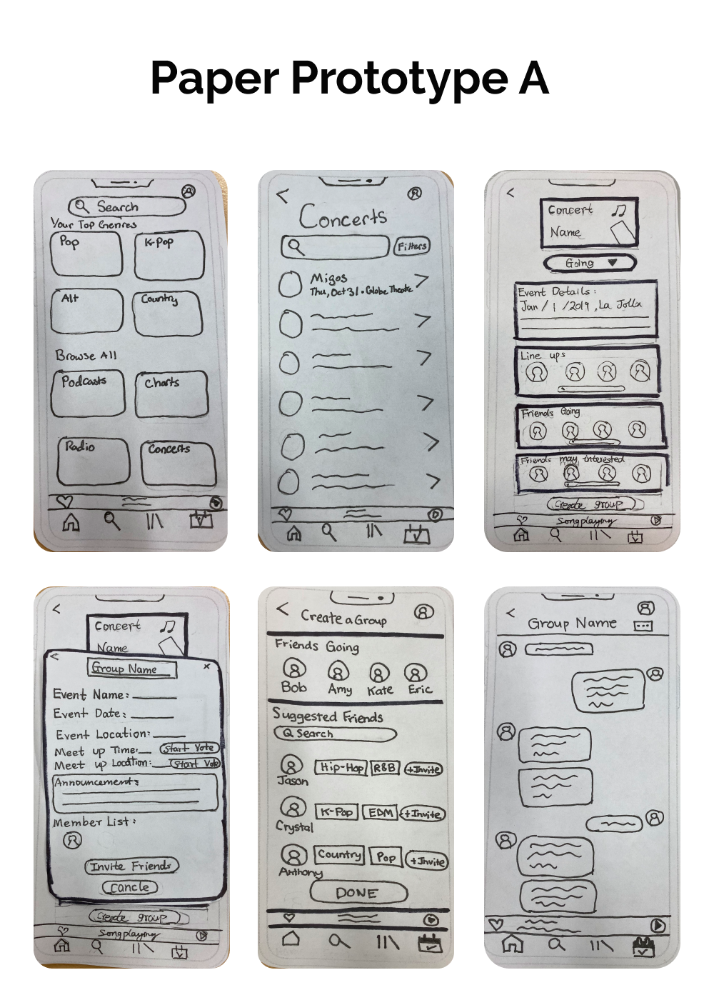
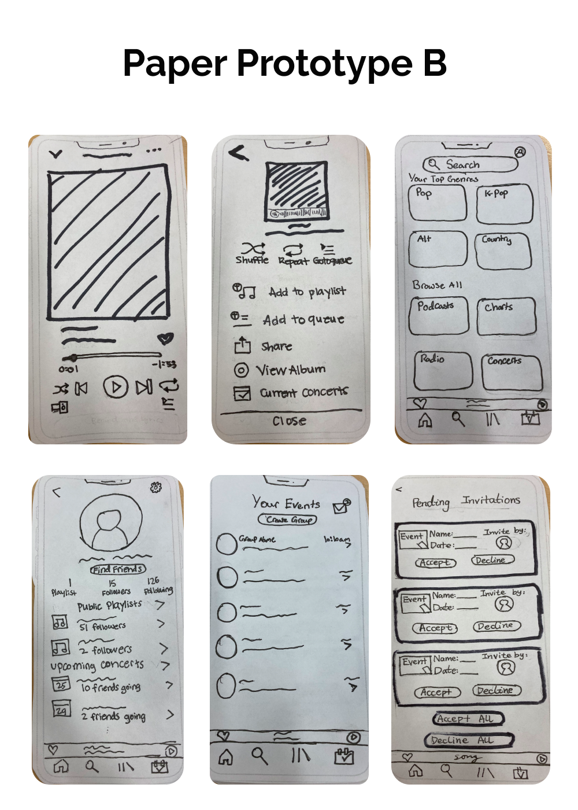
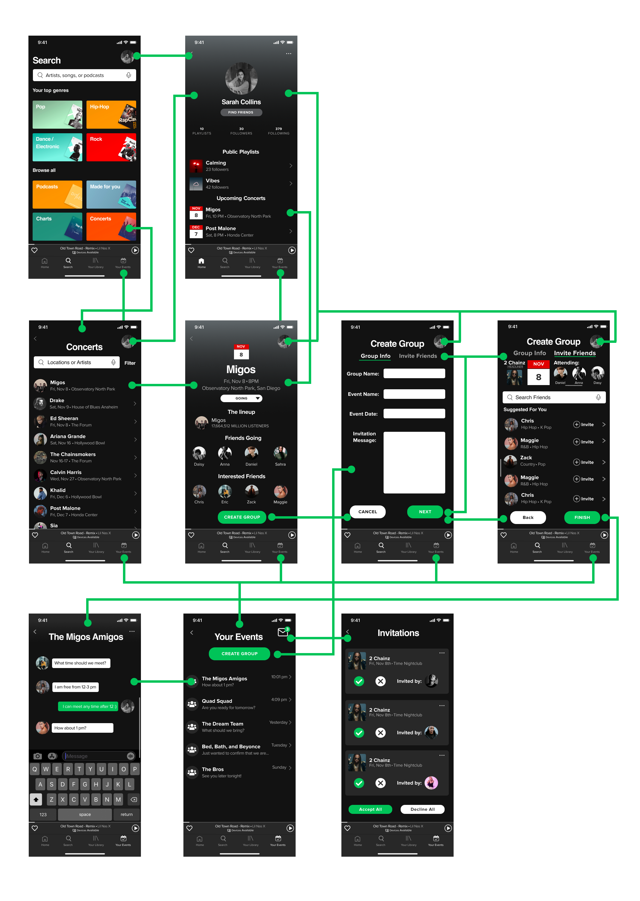
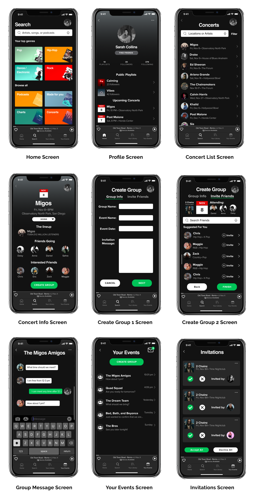

UC San Diego (COGS 127 - Design Interaction Course)
UI/UX Design Project - 10 Weeks
In our UCSD Interaction Design course, I worked with 4 other team members to either extend or redesign a feature of a widely used mobile app. After working on this project for 10 weeks, our team had to incorporate design principles and learned about how users interact with a product, conducted user testing to improve our designs, and learned about usability and information architecture.
Our team focused on extending the Spotify app and aimed at helping music enthusiasts find new ways to find friends or concert buddies that share similar music tastes. While working on this project, I helped on conducting user interviews for user feedback, experimented with different types of prototypes, and designed the user interface of the app.
We all currently have social media platforms that allow us to share or like a specific post with an online friend. However, in music streaming platforms where users are allowed to create playlists, follow playlists, or follow band/artists, there exists a fundamental issue. Although there are methods to find online tickets to your favorite concert, you may consider whether you should go with a friend. However, what if your friends do not enjoy the same music as you? What can you do? You may get discouraged from going to the concert because you don’t have a friend to go with.
This was the main issue that our team hoped to address. By focusing on this aspect, our team could potentially design something that encourages concert goers to find new friends and ultimately enjoy upcoming music events together.
In order to begin the design process, we needed to understand our target audience. In order to do so, we conducted interviews and sent out surveys. Both research methods included questions that gave participants the opportunity to explain their personal experiences or current frustations with finding friends to go to concerts with. Our questions included:
After conducting our research, we found two important findings:
In order to visualize our application, we began to build paper prototypes. We created two different paper prototypes that are shown below. We also tested both of our prototypes and gained constructive feedback from three users.
 This video was recorded while testing Prototype B on one of the participants.
After testing out Prototype A, we noticed that users said that it was very easy to navigate through the app and preferred it over Prototype B since it was easier to create a group and to search for concerts. However, they also mentioned that some aspects could be improved. For example, the sizing of the buttons were too small for them to use, so they proposed making the buttons slightly more visible. One user also said that having a voting feature was redundant since their goal was focused on inviting other members into the group and not voting on specific times to meet.
While testing Prototype B, many users were left in confusion. Many were unable to navigate through the app mainly because there were too many buttons on each screen leaving users overwhelmed. More specifically, one user noted that on the "Song Info" screen, they weren't sure what the dots (in the right corner) referred to and questioned its purpose. Lastly, users got stuck at the group creation process since they were unfamiliar with its features.
After testing our paper prototypes, we decided to focus on prototype A, since users were more comfortable in navigating through this design. We also took aspects that users enjoyed from prototype B such as the "Invitations" screen. By taking this feedback into account, we created our Hi-Fi prototype. We removed some features such as the voting feature since it deterred users from our actual goal. We also split the group creation process into two completely different screens so that users could easily detect that they are creating a group. Once we were done designing our Hi-Fi prototype, we conducted another round of user testing.
The video includes a walkthrough of our Hi-Fidelity prototype before we conducted user testing.
This picture includes a brief overview of our prototype wireframe:
When comparing our final design to our initial prototype, you are able to visualize which features we changed and how those changes further developed our extended feature.
After working on this project, I felt that this experience definitely helped me learn how to work as a team and increased my skills in designing user interfaces. Throughout this 10 week process, our team designated roles and expected each team member to communicate with one another to make sure that we were meeting deadlines. By working as a team, each member gave their critiques on each design and insured that each feature had intentionality. Another skill that I learned while working on this project was being able to take constructive criticism from users to fulfill their needs. This definitely geared our team to create an optimal design for our users.
One challenge that our team faced while creating this extended feature was finding a way to present concert information during the group creation process. We didn't want users to feel overwhelmed with having too much information but we wanted them to have enough information to complete their goal of finding other users within the app. If I were to continue to work on this project, I would want to continue to research more about what kind of designs could help users interact with people that have similar music interests.